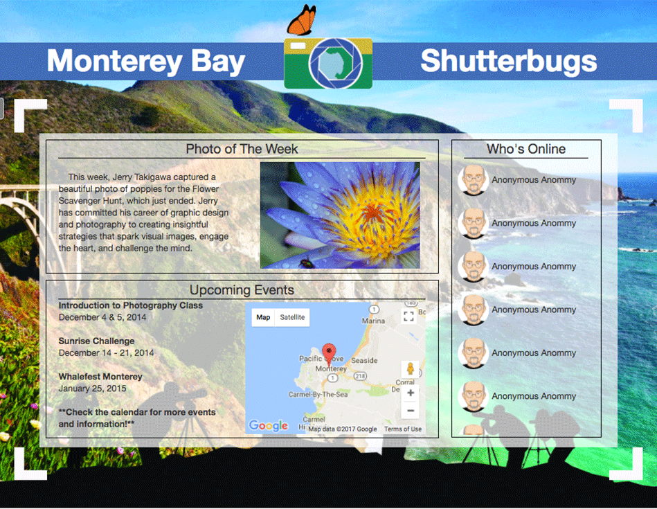

Covers web design aesthetics, layout, and structure; user-interface design and interaction;
database interaction and web application service design; and web animation and interactivity.
CST 351, Web Design, is a continuation course and picks up where CST 251, Web Tools, left off.
The course dives deeper into design theory and practice. Two sites were needed for the final
project; one combining an artists color palette and music to create a "Colorful Music" site,
and the second, a website for an imaginary club, Monterey Bay Shutter Bugs. The Shutter Bugs
site needed an interface where members can meet to share their interests, gain information, or
upload their own files to share with the community as well as new logo unique to them.
Colorful Music
My Colorful Music site was a homage back to the glory days of brick and mortar music stores
filled with tables lined with milk crates full of vinyls. I wanted to bring back that feeling
of flipping through a box of records and coming across a hidden gem.
Monterey Bay Shutter Bugs

Monterey Bay Shutter Bugs, MBSB, was to act as a site for a local photography club. Needing to be
designed from the ground up, the first thing was to create its own logo. One that is recognizable
and custom to MBSB, and them alone. My final logo design utilized a Monarch Butterfly, native to
the area, sitting a top a camera and the camera lens capturing an image of the Monterey Bay. The
logos three colors were decided by the class, as they are also CSUMB's School Colors.
The first page is to really show how it is a Web 2.0 site, relying heavily on user added
content. The design demonstrates how you can login and see whos online to chat with, as well as
user uploaded photos and galleries they want to share with.